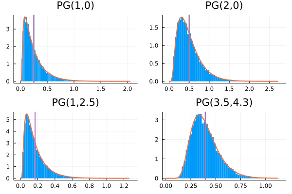

Additional distributions
Pólya-Gamma
AugmentedGPLikelihoods.SpecialDistributions.PolyaGamma — TypePolyaGamma(b::Real, c::Real) <: ContinuousUnivariateDistributionArguments
b::Realc::Realexponential tilting
Create a PolyaGamma sampler with parameters b and c. Note that sampling will differ if b is a Int or a Real.
pgs = [PolyaGamma(1, 0), PolyaGamma(2, 0), PolyaGamma(1, 2.5), PolyaGamma(3.5, 4.3)]
plot_hist_and_pdf(pgs)
Negative Multinomial
AugmentedGPLikelihoods.SpecialDistributions.NegativeMultinomial — TypeNegativeMultinomial(x₀::Real, p::AbstractVector)Negative Multinomial distribution defined as
\[ p(\boldsymbol{x}|x_0, \boldsymbol{p}) = \Gamma\left(\sum_{i=0}^M x_i \right)\frac{p_0^{x_0}}{\Gamma(x_0)}\prod_{i=1}^M \frac{p_i^{x_i}}{x_i!}\]
where $p_0= 1-\sum_{i=1}^M p_i$.
For a detailed understanding of this distribution, see "Negative multinomial distribution" - Sibuya et al. - 1964
Pólya-Gamma Poisson
AugmentedGPLikelihoods.SpecialDistributions.PolyaGammaPoisson — TypePolyaGammaPoisson(y::Real, c::Real, λ::Real)A bivariate distribution, used as hierachical prior as:
\[ p(\omega, n) = \operatorname{PG}(\omega|y + n, c)\operatorname{Po}(n|\lambda).\]
Random samples as well as statistics from the distribution will returned as NamedTuple : (;ω, n).
This structured distributions is needed for example for the PoissonLikelihood.
Pólya-Gamma Negative Multinomial
AugmentedGPLikelihoods.SpecialDistributions.PolyaGammaNegativeMultinomial — TypePolyaGammaNegativeMultinomial(y::BitVector, c::AbstractVector{<:Real}, p::AbstractVector{<:Real})A multivariate distribution, used as hierachical prior as:
\[ p(\boldsymbol{\omega}, \boldsymbol{n}) = \operatorname{NM}(\boldsymbol{n}|1, \boldsymbol{p})\prod_{i=1}^K\operatorname{PG}(\omega|y_i + n_i, c).\]
Random samples as well as statistics from the distribution will returned as a NamedTuple : (;ω, n).
This structured distributions is needed for the CategoricalLikelihood with a LogisticSoftMaxLink.
Additional likelihoods
AugmentedGPLikelihoods.LaplaceLikelihood — TypeLaplaceLikelihood(β::Real)Likelihood with a Laplace distribution:
\[ p(y|f,\beta) = \frac{1}{2\beta}\exp\left(-\frac{|y-f|}{\beta}\right)\]
Arguments
β::Real, scale parameter
AugmentedGPLikelihoods.StudentTLikelihood — TypeStudentTLikelihood(ν::Real, σ::Real)Likelihood with a Student-T likelihood:
\[ p(y|f,\sigma, \nu) = \frac{\Gamma\left(\frac{\nu+1}{2}\right)}{\Gamma\left(\frac{\nu}{2}\right)\sqrt{\pi\nu}\sigma}\left(1 + \frac{1}{\nu}\left(\frac{x-\nu}{\sigma}\right)^2\right)^{-\frac{\nu+1}{2}}.\]
Arguments
ν::Real, number of degrees of freedom, should be positive and larger than 0.5 to be able to compute momentsσ::Real, scaling of the inputs.
NamedTuple/TupleVector distribution interface
AugmentedGPLikelihoods.SpecialDistributions.AbstractNTDist — TypeAbstractNTDist is an abstract type for a wrapper type around measure(s) and distributions(s). The main idea is that instead of rand, mean and other statistical tools wrapped objects return NamedTuples or TupleVector when having a collection of them.
The following API has to be implemented: Given π::AbstractNTDist and Π::AbstractVector{<:AbstractNTDist}
Necessary
ntrand(rng, π)-> NamedTuplentmean(π)-> NamedTupleMeasureBase.logdensity_def(π, x::NamedTuple)-> RealDistributions.kldivergence(π₀, π₁)-> Real
Optional
tvrand(rng, Π)-> TupleVectortvmean(Π)-> TupleVector
AugmentedGPLikelihoods.SpecialDistributions.NTDist — TypeNTDist(d) -> NTDist{typeof(d),:ω}
NTDist{S}(d) -> NTDist{typeof(d),S}Wrapper around a single distribution to be compatible with the ntrand, ntmean interface. One can pass the wanted symbol via S while the default will be :ω.
AugmentedGPLikelihoods.SpecialDistributions.ntrand — Functionntrand([rng::AbstractRNG,] d) -> NamedTupleReturn a sample as a NamedTuple.
AugmentedGPLikelihoods.SpecialDistributions.ntmean — Functionntmean(d::Distribution) -> NamedTupleReturn the mean as a NamedTuple.
AugmentedGPLikelihoods.SpecialDistributions.tvrand — Functiontvrand([rng::AbstractRNG,] d::For) -> TupleVector
tvrand([rng::AbstractRNG,] d::AbstractVector{<:AbstractNTDist}) -> TupleVectorReturn a collection of samples as a TupleVector
AugmentedGPLikelihoods.SpecialDistributions.tvmean — Functiontvmean(d::AbstractVector{<:AbstractNTDist}) -> TupleVector
tvmean(d::For)Return a collection of mean as a TupleVector.